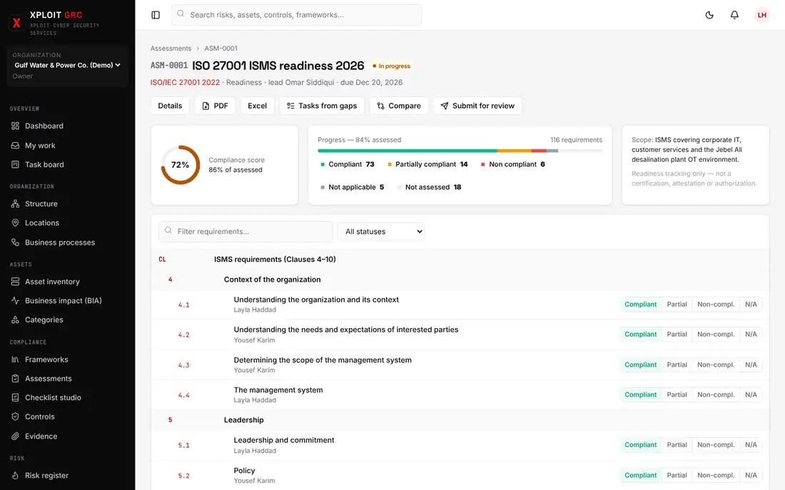
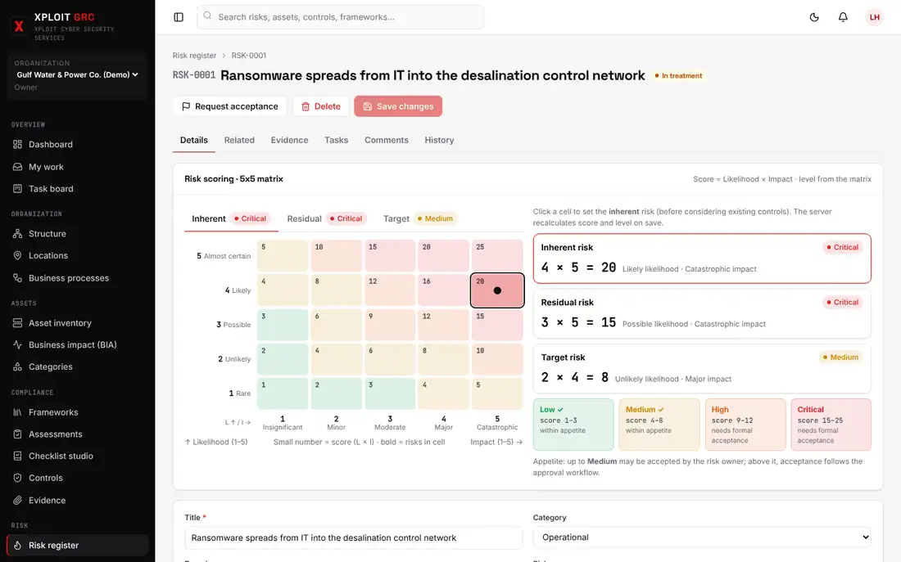
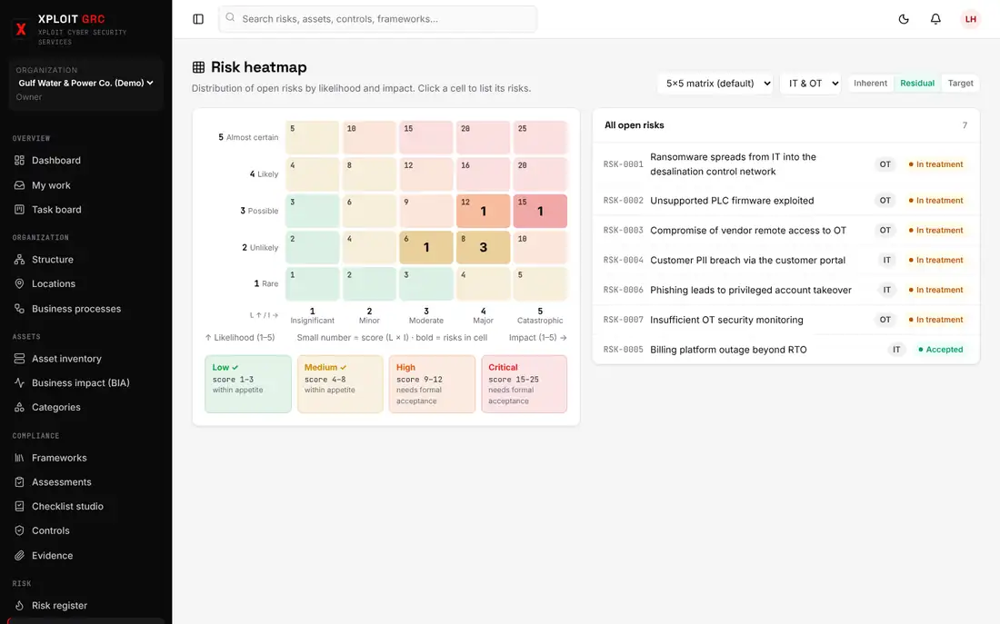
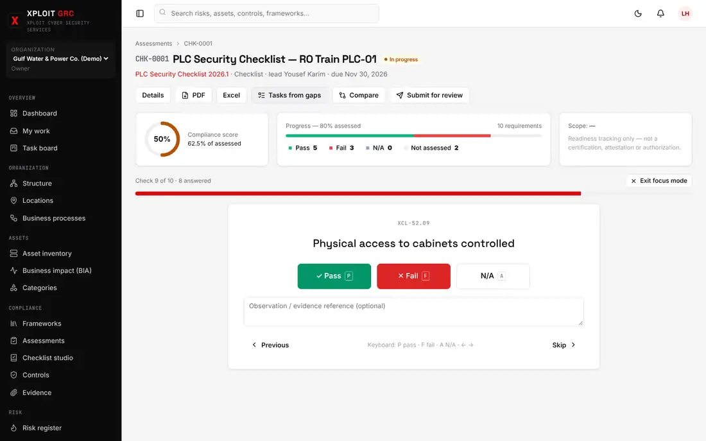
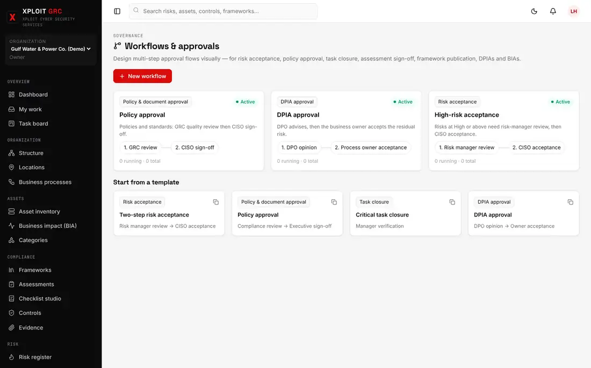
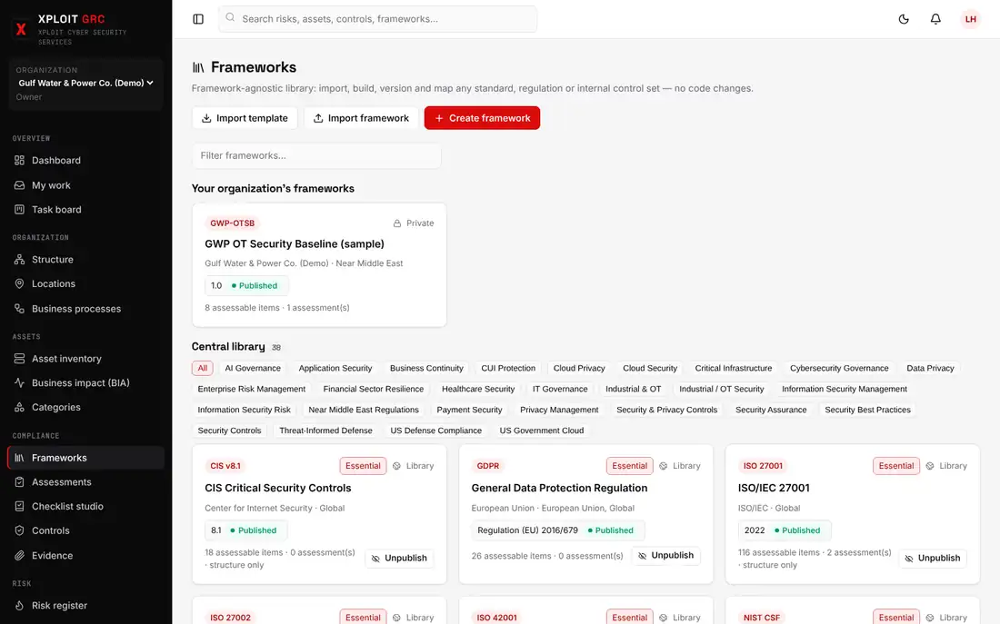

Xploit GRC · Governance, risk & compliance
Govern risk. Ensure compliance. Stay secure.
A smarter, simpler way to manage cybersecurity governance, risk, compliance and security frameworks from one centralized platform, available as SaaS or deployed on-premises.
One platform for your entire security program.
Xploit GRC brings governance, risk, compliance, assets, audits and third parties into one connected workspace, so every control, risk, policy and piece of evidence tells the same story.
Centralized management
Policies, risks, assets and controls in one source of truth.
Simplified compliance
Assess requirements, attach evidence, close gaps, fast.
Integrated risk
Risks linked to assets, controls, vendors and findings.
Continuous improvement
Recurring assessments, KPIs and KRIs that show progress.
Multi-framework
ISO, NIST, NCA, SOC 2, CMMC and IEC 62443 side by side.
Actionable insights
Role-based dashboards and executive reports in one click.

Evaluate Xploit GRC on your own program.
Arrange a Proof of Concept (POC) and assess how Xploit GRC supports your governance, risk and compliance requirements, with your frameworks and your data.
- Explore the dashboardWalk through the CISO dashboard, registers and day-to-day functionality.
- Evaluate risk & complianceScore risks, run compliance assessments and review gaps.
- Review frameworksBrowse the 38+ standards in the library, or import your own.
- Try evidence & remediationAttach evidence once, reuse it, and track remediation to closure.
Request a GRC POC
Tell us about your program and we'll prepare a proof of concept.
Your platform, your way.
Choose the deployment model that fits your security, data-residency and operational requirements. Every option runs the same full platform.
SaaS
Fully managed and tenant-isolated by design, with daily backups, encryption, MFA and a full audit trail. Optional KSA or UAE data residency and dedicated hosting are available.
- Fast onboarding, no infrastructure to run
- Tenant isolation, SSO and audit trail
- KSA / UAE data residency option
On-premises
Deploy Xploit GRC inside your own environment when policy, sovereignty or OT segregation requires your GRC data to stay on your infrastructure.
- Full control over data and hosting
- Fits regulated and critical-infrastructure environments
- Same modules, frameworks and workflows as SaaS
Enterprise flexibility
Business units, granular roles, SSO and approval workflows at scale.
Scalability
Add frameworks, versions and tenants without redevelopment.
Centralized compliance
One connected data model instead of scattered files and trackers.
See how the work actually gets done.
Real screens from Xploit GRC.
Assess every requirement in one workspace.
Inline status buttons, evidence reuse, owners and gaps, with live compliance scoring, focus mode and one-click tasks from gaps.
- Readiness score per framework
- Evidence linked once, reused everywhere
- PDF & Excel reports

Scoring your board can actually read.
Click the matrix to set inherent, residual and target risk. Every result reads like L 4 × I 5 = 20 → Critical, mapped to your appetite.
- 3×3, 4×4 or 5×5 methodologies
- Risk acceptance with approvals
- Linked assets, controls and vendors

Your whole risk portfolio on one grid.
Every cell shows its score and how many risks sit there. Filter IT or OT, switch between inherent, residual and target, and click a cell to drill in.
- Scale values and labels on both axes
- Colour bands tied to your risk appetite
- One click from cell to risk record

Run a checklist in minutes, not hours.
Pick any of 80 checklists, run it against a PLC, server, vendor or process, and answer one item at a time with Pass, Fail or N/A, keyboard shortcuts included.
- Run against assets, vendors or processes
- Evidence notes on every answer
- Failures become assigned tasks

Remediation everyone can see.
Create, assign and drag tasks across a Kanban board. Findings, risk treatments and audit actions all land in one place.
- Assign to anyone with due dates
- Closure notes & approval
- Overdue tracking on the dashboard

Multi-step approvals, built visually.
Design approval chains for policies, risk acceptance, task closure, DPIAs and BIAs, by role, named user, owner or BU manager.
- Conditions by risk level, type or domain
- Progress stepper on every record
- Full audit trail of every decision

38+ frameworks, ready when you are.
Start assessments from the central library (ISO, NIST, NCA ECC and OTCC, SACS-002, SOC 2, CMMC and more) or import and version your own.
- Filter by collection, region and industry
- Duplicate and customize any framework
- Excel, CSV, JSON, XML, Word and PDF import

Every module shares one data model.
From first framework to board report.
Choose your frameworks
Pick from the library or import your own: ISO 27001, NCA ECC, IEC 62443 and more.
Map assets & risks
Load IT and OT assets, rate criticality and register risks with clear L × I scoring.
Assess & collect evidence
Assess requirements, run checklists and attach evidence once for every framework.
Remediate & report
Assign tasks, approve through workflows and brief leadership with live dashboards.
Nine connected modules. Nothing your program doesn't need.
Designed for CISOs, compliance leads and auditors.
Dashboard & Executive Reporting
See your posture at a glance and brief leadership in minutes.
- Cybersecurity posture index
- Compliance progress by framework
- Risk exposure & heatmaps
- Open findings & remediation status
Governance & Policy Management
A living policy library with real accountability.
- Central policy repository
- Create, review and manage policies
- Version control & approval workflows
- Acknowledgment tracking
Risk Management
Clear, defensible scoring from identification to treatment.
- Cybersecurity risk register
- Identification & assessment
- Inherent and residual scoring (L × I)
- Treatment plans, owners & tracking
Compliance Management
Assess once, see gaps instantly, prove it with evidence.
- Centralized compliance monitoring
- Control & requirement assessment
- Gap identification
- Evidence collection & status tracking
Framework Management
Built-in library, multi-format import, or build your own, fully versioned.
- 38+ frameworks out of the box
- Version control & comparison
- Publish / unpublish per framework
- Add new standards without code
Asset Management
An IT and OT inventory focused on what GRC needs.
- Centralized asset inventory
- Ownership & classification
- CIA ratings & business criticality
- RTO / RPO tracking
Findings & Remediation
One action engine across audits, risks, gaps and vendors.
- Central findings register
- Assign corrective actions
- Priorities, deadlines & task board
- Progress tracking & accountability
Audit Management
Plan, execute and close audits in one workspace.
- Internal & external audits
- Audit planning & scope
- Evidence management
- Findings & corrective actions
Third-Party Risk Management
Know which suppliers can hurt you, and act on it.
- Vendor security assessments
- Supplier risk tracking
- Configurable questionnaires
- Third-party compliance monitoring
Every standard you answer to. One place.
Start from the built-in library, version it, and extend it with any regulation or internal framework as your requirements evolve.
International Standards 6
Cybersecurity Frameworks 7
Privacy & Data Protection 5
Cloud & Service Compliance 5
Industrial & OT Cybersecurity 5
Government & Defense 6
Plus your own: import any regulation or internal framework from Excel, CSV, JSON, XML, Word or PDF. Xploit GRC tracks readiness; it does not issue certifications or authorizations.
What teams do with Xploit GRC.
Illustrative scenarios showing how the platform fits real programs across IT and OT.
NCA OTCC readiness across desalination and power plants
- Inventory PLCs, SCADA and HMIs per plant
- Run OT checklists at each site
- Track OTCC and IEC 62443 gaps in one view
- Report plant-by-plant readiness to the board
NCA OTCC · IEC 62443 · NCA ECC
CMMC Level 2 readiness for a DoD contract
- Scope CUI systems and owners
- Assess 110 NIST SP 800-171 requirements
- Turn NOT MET items into POA&M tasks
- Export SSP evidence and readiness reports
CMMC L2 · NIST SP 800-171
SOC 2 and ISO 27001 with one set of evidence
- Run both frameworks side by side
- Upload evidence once, reuse it everywhere
- Automate policy approvals and acknowledgments
- Give auditors restricted read-only access
SOC 2 · ISO 27001 · ISO 27701
Aramco SACS-002 compliance as a third party
- Identify your third-party class and scope
- Assess SACS-002 control areas
- Collect evidence for Aramco reviews
- Track remediation to closure
SACS-002 · NCA ECC
Many clients, one login
- Separate, isolated workspace per client
- Reuse your checklists and frameworks
- Standard reports across every engagement
- Switch clients in one click
Any framework
UAE and Saudi PDPL in practice
- Build the RoPA for every processing activity
- Screen and approve DPIAs
- Answer data subject requests on time
- Log breaches against the 72-hour clock
UAE PDPL · Saudi PDPL · GDPR
Enterprise-grade GRC without enterprise-level complexity.
Built by practitioners who have run ISO 27001, SOC 2, CMMC and IEC 62443 programs, and wanted tools that remove work instead of creating it.
| Capability | Spreadsheets | Xploit GRC |
|---|---|---|
| One evidence file, many frameworks | — | ✓ |
| Live compliance & risk dashboards | — | ✓ |
| Approval workflows & audit trail | — | ✓ |
| Version-controlled frameworks | — | ✓ |
| IT and OT in one register | — | ✓ |
Simple & intuitive
Clean screens, sensible defaults, every feature within two clicks.
Less admin overhead
Tasks, reminders and approvals that run themselves.
Compliance visibility
Know where you stand per framework, domain and owner.
Practical by design
Focused on GRC, not trying to be your SIEM or CMDB.
From a first ISO 27001 project to a multi-entity program.
SMBs
Get audit-ready fast with templates, checklists and sensible defaults.
Enterprises
Business units, granular roles, SSO and approval workflows at scale.
Consultants & MSPs
Every client in its own isolated workspace, from one login.
CISOs & auditors
A board-ready view across every site, plant and business unit, plus restricted auditor access.
Simple pricing. Every feature included.
Pick a plan by the number of users who create or edit records. Billed annually, with no per-framework or per-module fees.
Starter
Up to 5 usersFor SMBs and a first ISO 27001 or NCA ECC project
Request a POCGrowth
Up to 15 usersFor mid-size teams running multiple frameworks
Request a POCBusiness
Up to 40 usersFor multi-site organizations with IT and OT teams
Request a POCEnterprise
Up to 100 usersFor groups, utilities and critical infrastructure. 100+ users: $250 per extra user
Contact salesEvery plan includes
- All modules: risk, compliance, assets, BIA, audits, vendors, privacy
- Full framework library + unlimited custom frameworks
- Workflows, task board, checklists and reports
- SSO, API keys and webhooks
- Unlimited read-only viewers
- Free time-boxed access for external auditors
- Daily backups, audit trail, encryption and MFA
Consultants & vCISOs
Partner plan: $2,900 / year per client workspace (up to 5 users), your consultants free across all clients. Reseller margins available.
Optional services
Onboarding from $2,500 · Premium support +15% · KSA / UAE data residency or dedicated hosting +40% · Extra storage $500 / 500 GB
Flexible terms
- 14-day free trial
- 10% off 2-year and 15% off 3-year terms
- Add users anytime, prorated
- On-premises deployment: contact sales for licensing
Prices in USD, billed annually, excluding VAT. AED amounts are approximate.
Explore our other platforms.
Take control of your cybersecurity governance.
Arrange a Proof of Concept and see how Xploit GRC brings your risks, controls, policies, frameworks and evidence together.
Or email hello@xploit-security.com